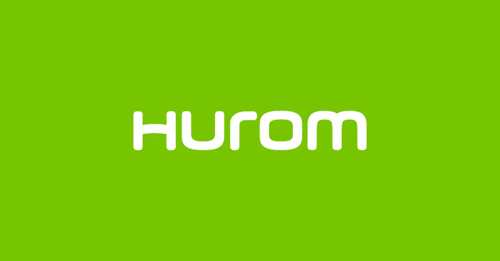

휴롬 Hurom
저속 착즙 원액기라는 카테고리를 만든 주방가전 브랜드
최종 업데이트

휴롬은 어떤 브랜드인가
가전 제조업체로 출발해 이후 나선형 압착 방식으로 과즙을 짜내는 원액기 기술을 개발했다. 기존 고속 회전 믹서와 다른 저속 착즙 방식을 앞세워 건강식 트렌드와 맞물려 국내 시장에서 인지도를 쌓았다.
이후 미국 홈쇼핑 등 해외 유통 채널을 통해 원액기라는 제품 카테고리 자체를 해외 시장에 소개했다.
휴롬의 브랜드 아이덴티티는 무엇인가
기존에 없던 조리 방식(저속 착즙)을 하나의 제품 카테고리로 만들어 국내외 시장에 동시에 정착시킨 사례다. 저속 착즙이라는 핵심 기술 차별화와 해외 유통 채널을 통한 카테고리 수출.
휴롬 연혁 — 주요 사건은 언제였나
휴롬 로고는 어떻게 변해왔나
자주 묻는 질문
휴롬의 브랜드 아이덴티티는 무엇인가요?
기존에 없던 조리 방식(저속 착즙)을 하나의 제품 카테고리로 만들어 국내외 시장에 동시에 정착시킨 사례다.
출처와 검증
브랜드명은 한글과 원어를 함께 표기하되 데이터에 없는 표기는 만들지 않습니다. 기원 국가·설립연도는 검수된 정의문에서 확인된 값을 우선하고, 없을 때만 공식 웹사이트 URL이 일치하는 위키데이터 개체의 값을 씁니다.